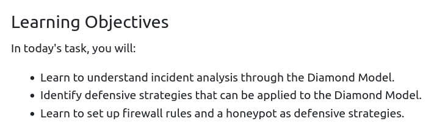
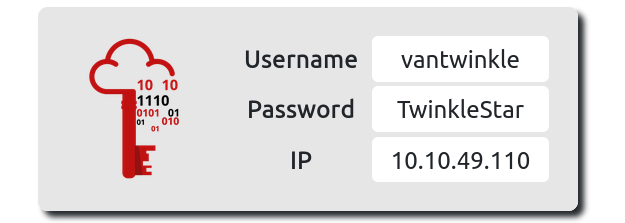
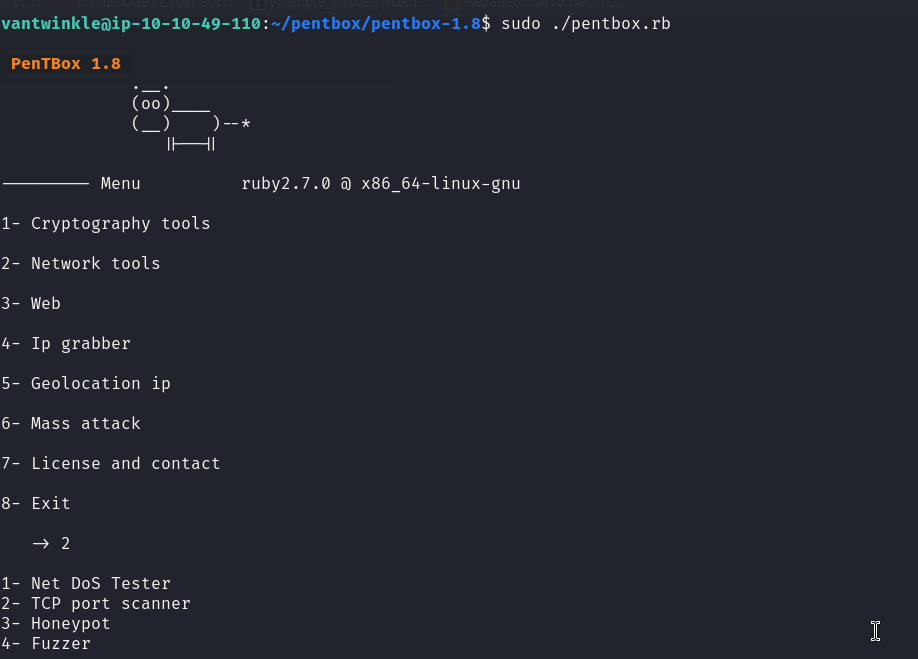
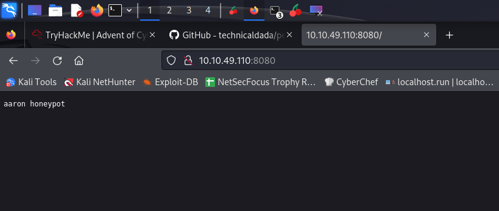
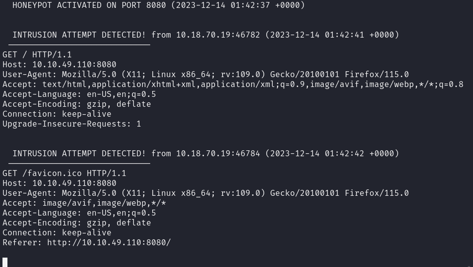
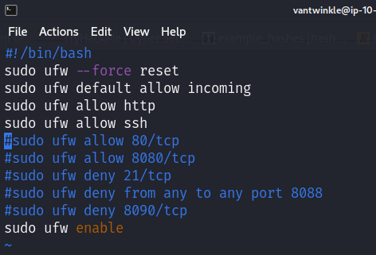
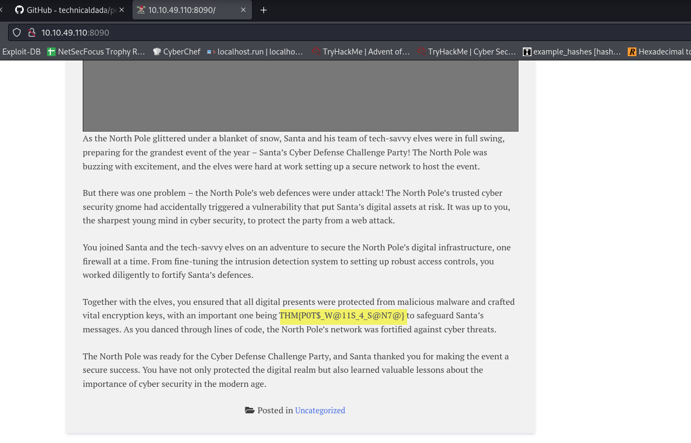

vantwinkle:TwinkleStar
after I ssh into the machine I learned about a new Honeypot tool called Pentbox

I selected the 2- Network tools then 3- Honeypot
this is the result when you try to access the port

In the backend this is what I can see

and then to get the flags, I commented the ufw deny to allow the http and access the flags, here is what it looks

